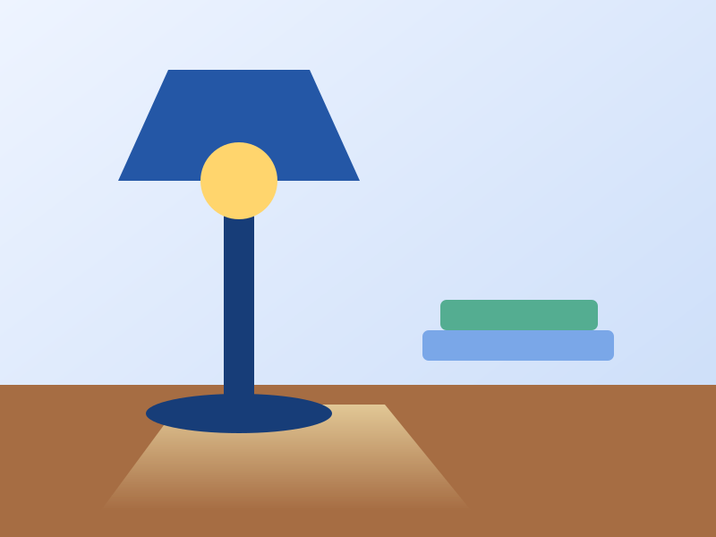
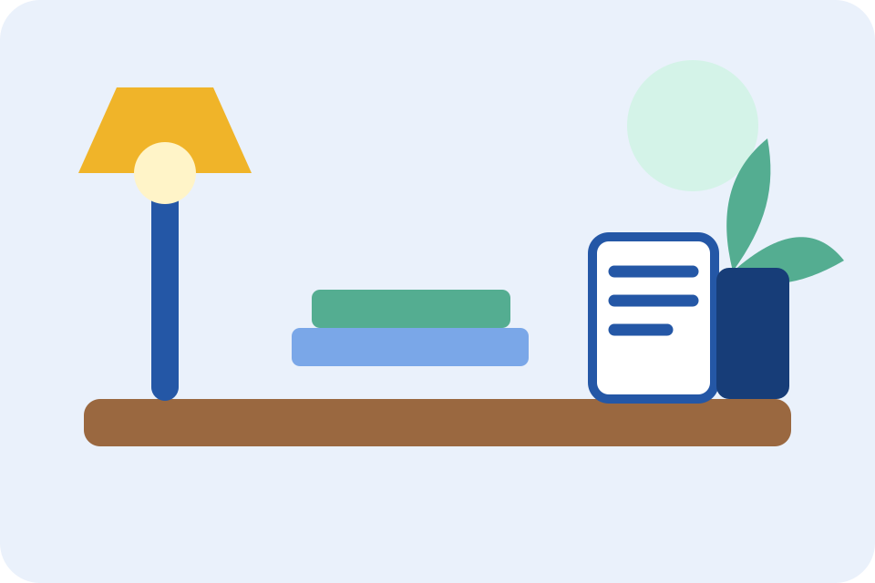
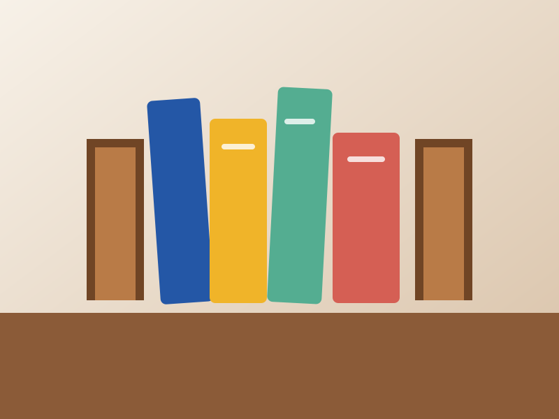
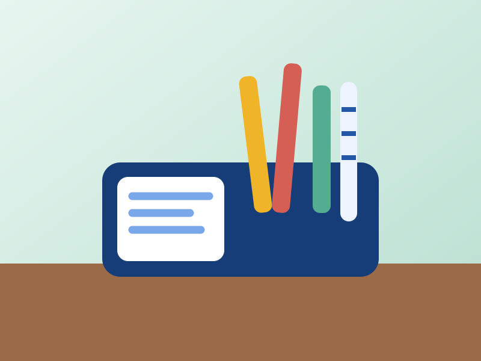

Настольная лампа
Карточка меняет внутреннюю компоновку по ширине собственного контейнера.
Уточнить наличиеАДАПТИВНЫЙ УЧЕБНЫЙ ПРИМЕР
Один интерфейс меняет компоновку, выбирает подходящее изображение и сохраняет доступность с клавиатуры.
Посмотреть карточкиАДАПТИВНЫЕ ИЗОБРАЖЕНИЯ
Браузер выбирает подходящий источник сам — по ширине viewport и плотности экрана. Проверяйте через DevTools → Network (фильтр Img) или document.querySelector('img').currentSrc в консоли.

Как проверить: DevTools → Network → фильтр «Img», меняйте ширину окна. До 480 px —
workspace-mobile.svg (вертикальная); 480–959 px — workspace-480.svg; 960 px и шире — workspace-960.svg.
FLEX + GRID + MEDIA QUERIES
Фильтр и карточки показывают основные механизмы адаптивного интерфейса, но не являются готовым многостраничным проектом.

Карточка меняет внутреннюю компоновку по ширине собственного контейнера.
Уточнить наличие
Сетка использует доступную ширину и не создаёт горизонтальную прокрутку страницы.
Задать вопрос
На узком экране карточки идут последовательно, на широком — образуют сетку.
Выбрать модельАДАПТИВНАЯ ФОРМА
Заполните три связанных поля. Подписи остаются видимыми, а форма перестраивается под доступную ширину экрана.
Компактный вариант открывается в модальном окне: фокус переходит внутрь и возвращается к кнопке после закрытия.
ДОСТУПНОСТЬ ФОРМЫ — ОШИБОЧНОЕ СОСТОЯНИЕ
Статический учебный пример. Показывает семантическую связь между полем, подписью и сообщением об ошибке — без JS-валидации.
Введите адрес в формате student@example.ru
ЛОКАЛЬНАЯ ПРОКРУТКА ТАБЛИЦЫ
| Товар | Категория | Материал | Гарантия |
|---|---|---|---|
| Лампа | Свет | Металл | 24 месяца |
| Подставка | Организация | Дерево | 12 месяцев |
| Органайзер | Аксессуары | Пластик | 12 месяцев |
ПРОБЛЕМА → ПРОВЕРКА → ИСПРАВЛЕНИЕ → ПОВТОРНАЯ ПРОВЕРКА
Объект проверки — ссылка «Открыть пояснение» в карточке уведомления. Сравните её контраст и видимый клавиатурный фокус в двух состояниях.
Ссылка сливается с фоном, а клавиатурный фокус не виден.
Перейдите к ссылке клавишей Tab и оцените контраст.
Верните читаемый цвет, подчёркивание и заметную рамку фокуса.
Повторите тот же маршрут и убедитесь, что дефект устранён.
Состояние: дефект
Состояние: исправлено
ПРОВЕРЯЕМЫЙ ЭЛЕМЕНТ
Обратите внимание на контраст текста и видимость клавиатурного фокуса ссылки.
Открыть пояснение